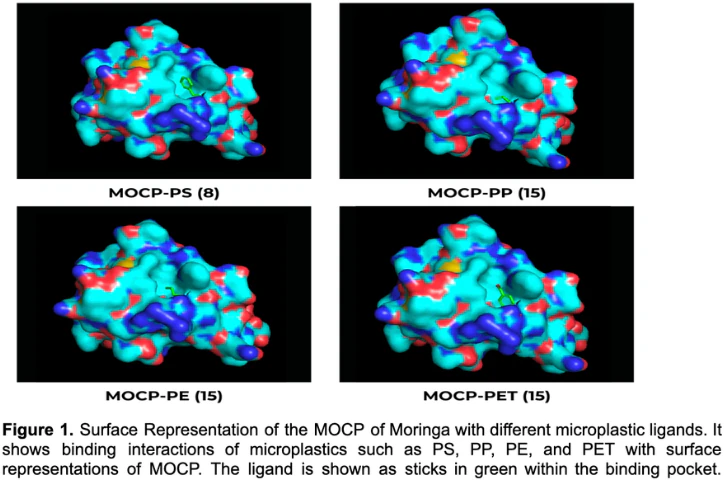
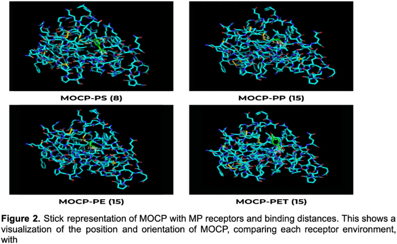

Research Paper
Bioinformatics-Guided Comparative Analysis of Moringa and Tamarind for Microplastic Removal.
This study investigates two plant-derived biopolymers, Moringa oleifera cationic protein (MOCP) and Tamarind xyloglucan polysaccharide, as biodegradable, low-cost alternatives for microplastic removal through an integrated computational and experimental framework.
Molecular docking using AutoDock Vina and SMINA evaluated binding between both biopolymers and four microplastic types: PP, PE, PS, and PET. Interatomic distances measured in PyMOL validated docking results, and SwissADME characterised the physicochemical properties of Tamarind xyloglucan components.
MOCP - Moringa protein showed the strongest binding with the tested microplastics, with its strongest affinity with PET (-5.015 Kcal/mol) and PS (-4.621 Kcal/mol), corroborated by the shortest interatomic distances.
Identified complementary removal mechanisms: Moringa supports charge neutralization, while tamarind supports hydrogen-bond bridging and physical entrapment
Wet lab experiments confirmed these predictions
Both biopolymers operate through complementary mechanisms, suggesting combined use offers broader-spectrum removal.
This study provides a computationally and experimentally validated basis for plant-based coagulants in decentralised rural water treatment.
Community Impact
Set up a community filtration system on the banks of river Ganga in collaboration with Swachchanjali Kuda Bazar Foundation for removal of microplastics from water using biopolymer- MORINGA. The initiative provides 500-750 litres of filtered water per day

